Suprise Santa Monica Pier Trip
(THIS HAPPENED IN 2006)
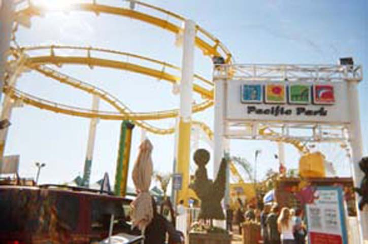
For those of you who thought Last 2006 Update was the Last coaster trip of 2006, YOU GOT PUNKED!!!! We went to the Santa Monica Pier on December 30th! HA! HA!
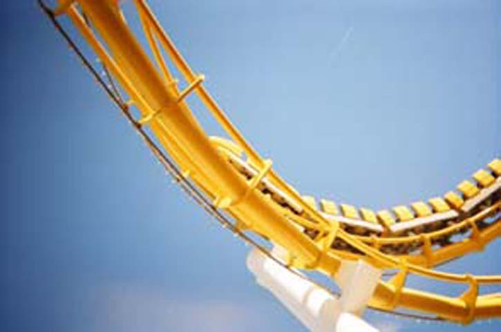
On other news, Westcoaster is now completly yellow! Unlike last time.
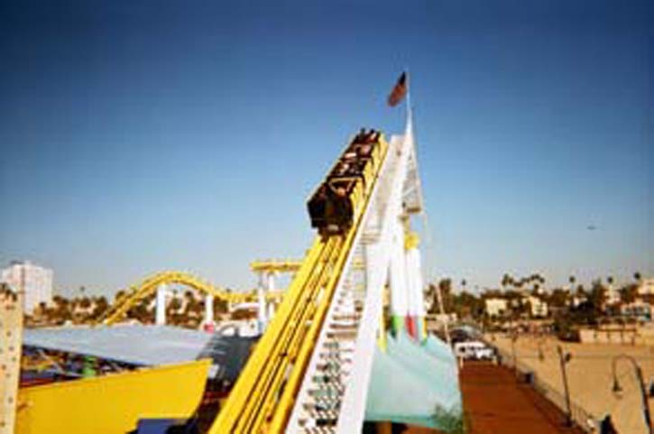
Viper was not the last coaster of the 2006 season, Westcoaster was!!!
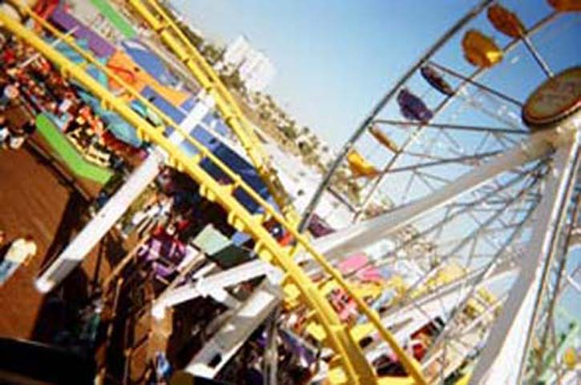
Whee! Its just like being on Goliath! "DEATH HELIX!!!!!"
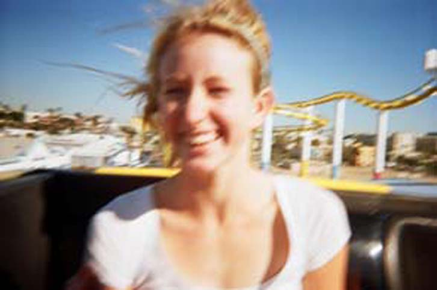
"Meh, The ride has airtime, But I still don't like it."
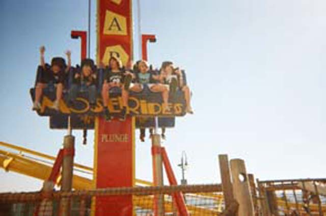
Screw Westcoaster! Its all about the Super Frog Hopper!
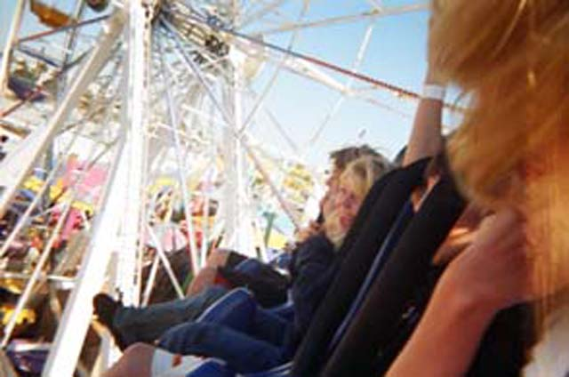
Who doesn't love the Super Frog Hopper?!?!
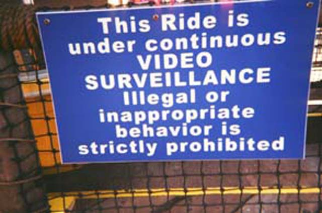
"BULLS**T!!!!!!!!!!!!!!!!"
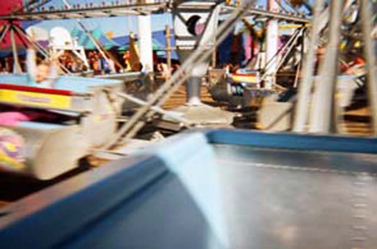
I don't like this damn Scrambler! It replaced a very good Chaos!
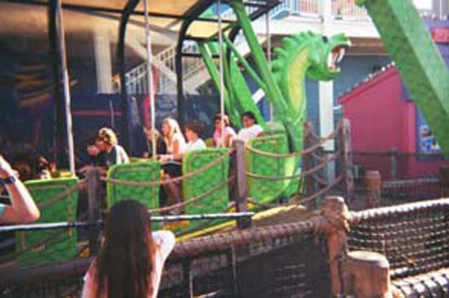
Look what we're on Andrew!!!!
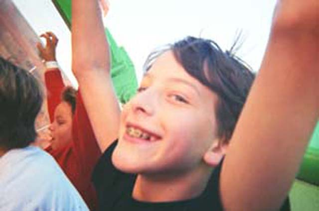
You know you're jealous Andrew!!!!
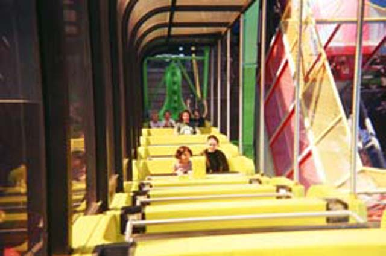
You know, We of Incrediblecoasters feel kind of bad for punking you. So we'll give you a treat. You've just won...
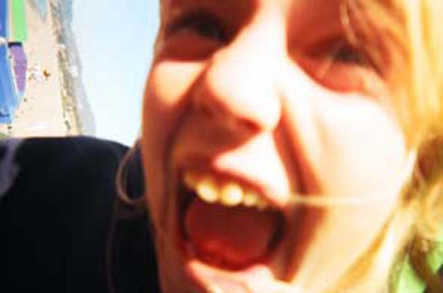
...THIS VERY UGLY PHOTO OF CELESTES HEAD! NOW CLICK SAVE PICTURE AS AND SET IT AS YOUR DESKTOP BACKROUND!!!!!
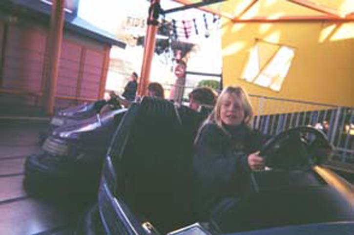
If they don't let you do Head Ons, Then they're automatically sh*tty bumper cars by Incrediblecoasters standards!
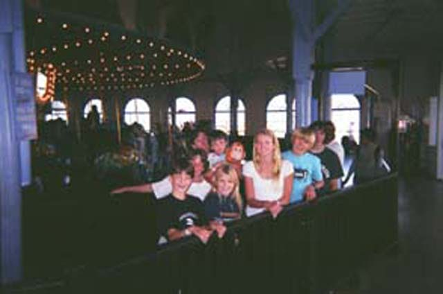
This carousel is cool because its in movies! Too bad the operator was a bitch.
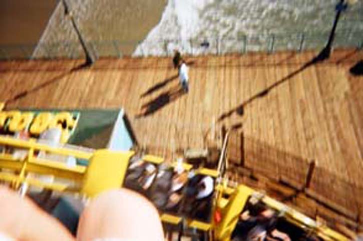
Heres a shot of Westcoaster taken from the Super Frog Hopper!
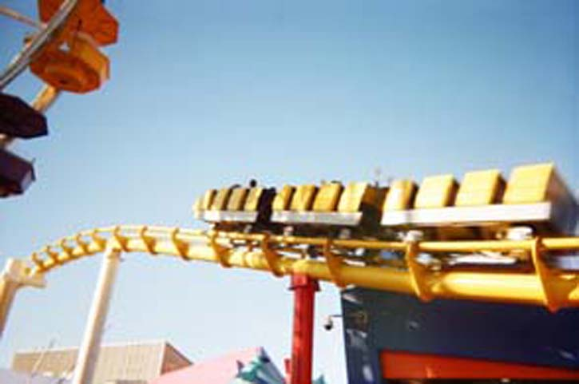
Westcoaster is cool because its the only credit in the park!
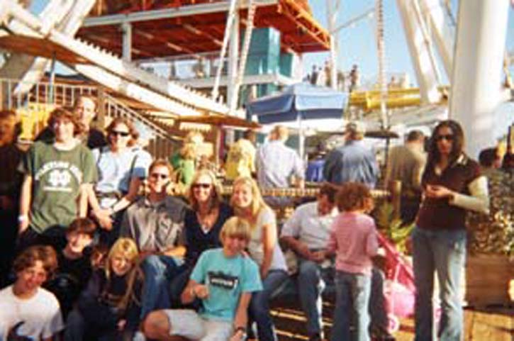
We hope you enjoyed the Real Last 2006 Update!
Home